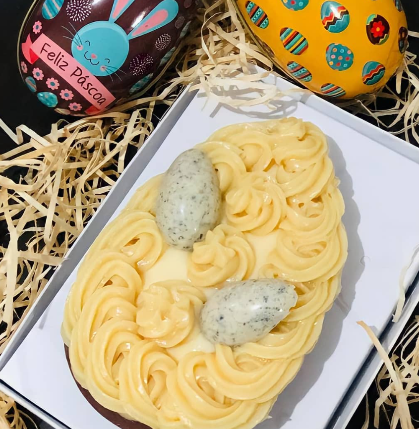

Ovo de Páscoa

Ovo de Páscoa de Colher com Recheio de Maracujá
Este ovo de Páscoa de colher com recheio de maracujá é uma delícia refrescante para celebrar a Páscoa com muito sabor e sofisticação.
Ingredientes:
Casca do Ovo de Chocolate
- 500g de chocolate ao leite picado
Recheio de Maracujá
- 1 xícara de polpa de maracujá
- 1 lata de leite condensado
- 1 caixa de creme de leite
- Suco de 1 limão
Modo de Preparo:
Casca do Ovo de Chocolate
- Derreta metade do chocolate em banho-maria ou no micro-ondas, mexendo sempre até ficar homogêneo.
- Pincele uma camada do chocolate derretido nas formas de ovo de Páscoa, cobrindo todos os espaços.
- Leve à geladeira por 5 minutos para firmar.
- Repita o processo para garantir uma casca mais grossa.
- Desenforme com cuidado e reserve.
Recheio de Maracujá
- Em uma panela, misture a polpa de maracujá, o leite condensado e o creme de leite.
- Leve ao fogo baixo, mexendo sempre, até começar a engrossar.
- Retire do fogo, adicione o suco de limão e misture bem.
- Deixe esfriar.
Montagem
- Coloque uma camada do recheio de maracujá dentro da casca de chocolate.
- Quebre mais um pouco de chocolate e derreta-o.
- Despeje o chocolate derretido sobre o recheio de maracujá, formando uma segunda camada.
- Decore com sementes de maracujá ou raspas de chocolate, se desejar.
- Sirva o ovo de Páscoa de colher com recheio de maracujá e aproveite esta delícia refrescante durante a Páscoa!